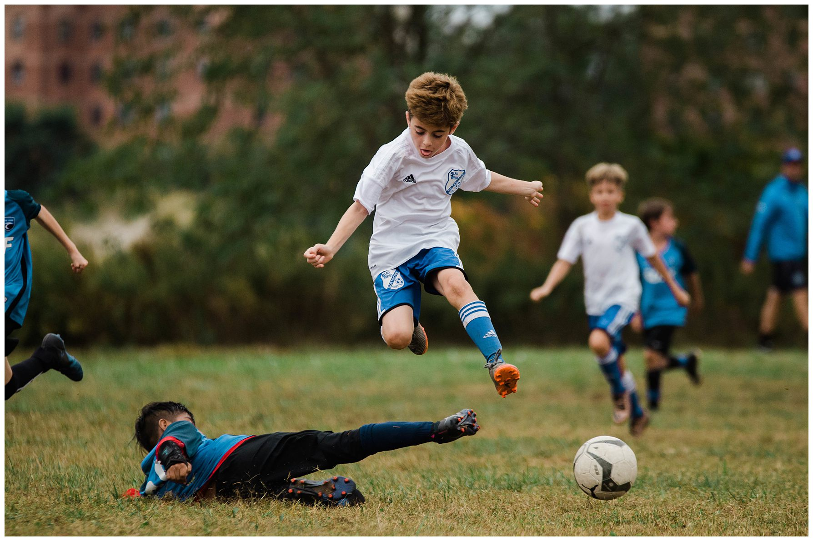

Sample Image
Here’s an example for the kind of sports photography I love to capture.
Embedded YouTube Video
Interactive Tableau Graph
Below is an example Tableau Public visualization embedded with an iframe. You can swap this URL for any Tableau visualization you prefer.
Want to jump back up? Return to the top of the page. That link is an example of an on-page anchor.